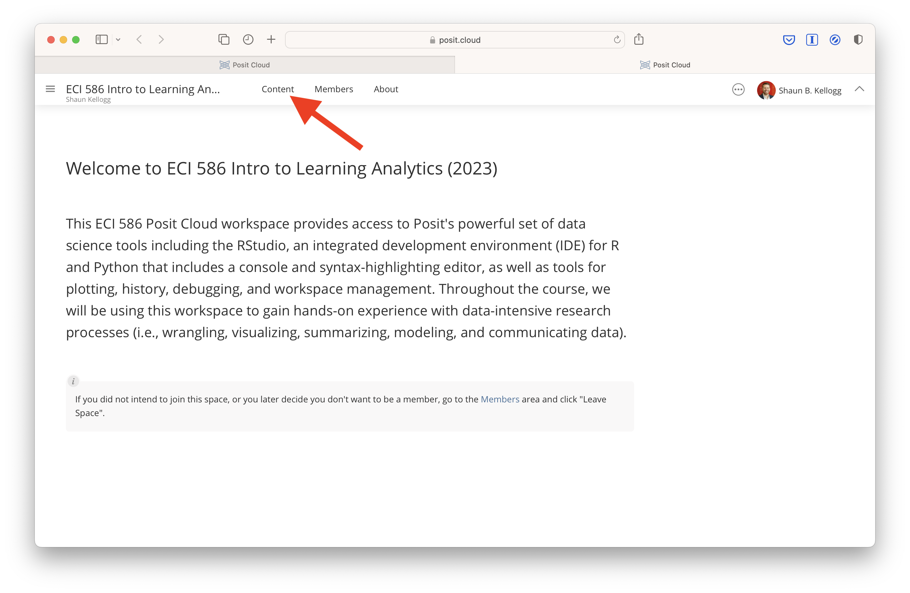
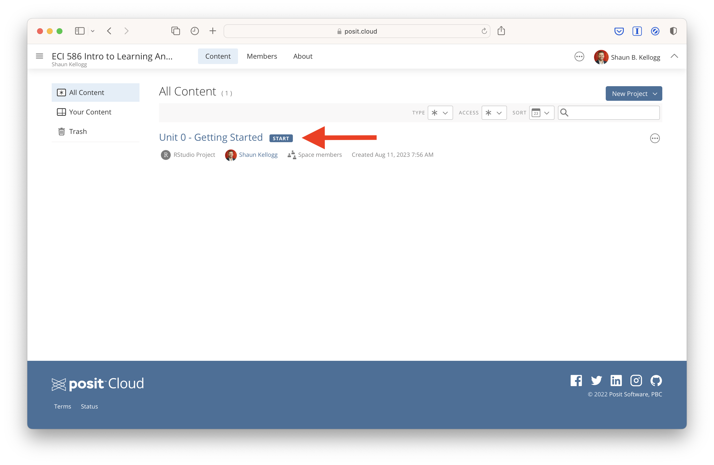
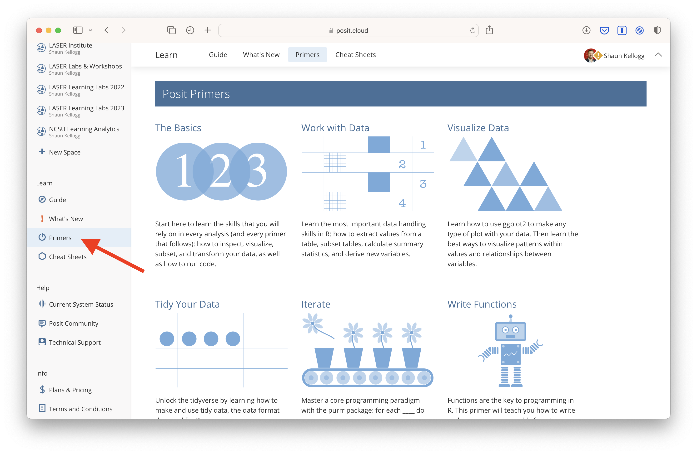

Learning Analytics Toolkit
ECI 586 Intro to Learning Analytics
Your final task this week is to prepare your Learning Analytics Toolkit by setting up and getting familiar with the texts, software, and supplementary learning resources for this course.
Course Texts
There are several required textbooks for this course, all of which are freely available online or through the NCSU Library. Supplemental course readings and content (e.g. articles, videos) will also be provided at no cost through the Moodle course site. You will also be asked to locate articles of interest for our discussions and I highly recommend that you link Google Scholar to the NCSU Library: https://www.lib.ncsu.edu/articles/google-scholar.
Required
Course readings will draw heavily from the following resources:
Krumm, A., Means, B., & Bienkowski, M. (2018). Learning analytics goes to school: A collaborative approach to improving education. Routledge.
Estrellado, R. A., Freer, E. A., Mostipak, J., Rosenberg, J. M., & Velásquez, I. C. (2020). Data science in education using R. Routledge.
Lang, C., Siemens, G., Wise, A., & Gasevic, D. (Eds.). (2017). Handbook of learning analytics (1st Edition). New York, NY, USA: SoLAR, Society for Learning Analytics and Research.
Lang, C., Siemens, G., Wise, A., & Gasevic, D., Merceron, A. (Eds.). (2022). Handbook of learning analytics (2nd. ed.). Vancouver, BC. SoLAR, Society for Learning Analytics and Research. DOI: 10.18608/hla22
Carolan, B. V. (2013). Social network analysis and education: Theory, methods & applications. Sage Publications.
Course Software & Resources
Required Software
This course requires R and R Studio, which you will access through Posit Cloud and will use to for hands-on data analyses experiences throughout the semester.
Posit Cloud (https://posit.co/products/cloud/cloud/) provides access to Posit’s powerful set of data science tools, including RStudio (https://posit.co/products/open-source/rstudio), an integrated development environment (IDE) for R and Python that includes a console and syntax-highlighting editor, as well as tools for plotting, history, debugging, and workspace management. To register for a free Posit Cloud account vist: https://login.posit.cloud/register.
Posit Primers (https://posit.cloud/learn/primers) provide an excellent series of interactive tutorials that range from R fundamentals like basic programming syntax to complex tasks like building interactive data dashboards.
RPubs (https://rpubs.com) is a free and easy web publishing platform for R. Throughout the course, you will be using R Markdown) and Quarto documents, which weave together narrative text and code to produce elegantly formatted, static and dynamic outputs formats including: HTML, PDF, HTML5 slides, Tufte-style handouts, books, dashboards, shiny applications, research articles, websites, and more. To publish these documents via RPubs, however, you will first need to create an account here: https://rpubs.com/users/new.
Recommended Learning Tools
Posit Cheat Sheets (https://posit.cloud/learn/cheat-sheets) also provide handy reference to commonly used packages and their essential functions, including example code for testing them out.
Dataquest (https://www.dataquest.io) offers interactive R, Python, Sheets, SQL and shell courses on topics in data science, statistics and machine learning. An email will be sent providing free access to our Dataquest team, full catalogue of courses and resources for 6 months.
LinkedIn Learning (https://www.linkedin.com/learning) offers tutorials and training courses on R, R Studio, and Tableau. LinkedIn Learning is available at no charge to students.
Getting Started with Posit Cloud
To help get you started with R, I’ve created a brief Getting Started activity for you to work through. The activity is designed to orient you to our data analysis assignments and to R, RStudio, and/or RMarkdown, which we’ll be using to complete those assignments.
First, sign-up for an Posit Cloud account and make sure you can access our ECI 586 Intro to Learning Analytics (2023) workspace. You should see a prompt to “Join Space?” like the one below:

After joining the space, you may see a description of the space like in the screenshot below. Click the “Content” menu tab next.

Once you have accessed the content section of our workspace, click on the assignment labeled Unit 0 - Getting Started, which will create a copy of the R Project for your individual use.

Next, click on the unit-0-case-study.qmd file located in the Files tab of your R Studio cloud project to open the Unit 0: Getting Started Case Study assignment.

Finally, click on the “Visual” button in the toolbar of the file you just opened and follow the direction to complete the assignment.

Posit Primers
After completing the unit-0-case-study.qmd assignment, I highly recommend getting a head start on the The Basics tutorial built into RStudio Cloud, which will be due in a few weeks. You can access these tutorials along with many other excellent primers by clicking on the Primers link in the sidebar:

I’d also encourage you to read and/or work though the following chapters from Data Science in Education Using R, especially if you are interested in using the RStudio Desktop app at some point in the future:
Getting Started with R and RStudio covers downloading R and RStudio, RStudio layout and customization, and writing and running code in RStudio.
Foundational Skills introduces RStudio Projects and key building blocks of the R language including packages, functions, data, objects, and operators.
Troubleshooting
Learning a programming language like R (or any new language for that matter) will inevitably be a little frustrating at first. Even experienced R developers like Hadley Wickham get frustrated:
“It’s easy when you start out programming to get really frustrated and think, ‘Oh it’s me, I’m really stupid,’ or, ‘I’m not made out to program.’ But, that is absolutely not the case. Everyone gets frustrated. I still get frustrated occasionally when writing R code. It’s just a natural part of programming. So, it happens to everyone and gets less and less over time. Don’t blame yourself. Just take a break, do something fun, and then come back and try again later.”
When feeling stuck or like banging your head against your desk, there are several options for seeking out help within and beyond this course:
Course Forums & Email: Including this general software troubleshooting forum, we will have forums for each assignment. You’ll likely have similar questions as your peers, and you’ll likely be able to answer other peoples’ questions too so I encourage you to use these forums. Unlike most of my apps and social media accounts, I actually have notifications enabled. Also, do not hesitate to email me directly as well.
NCSU Library Services: The Data & Visualization group is an incredible asset for NC State students. Though the library’s website, you can access and enroll in workshops, find resources, and chat or schedule a Zoom appointment to get R help.
Social Media: If you use Twitter, you can also post R-related questions and content with the #rstats hashtag. One of the things I most value about the R in general is that the R community is exceptionally helpful.
The Interwebs: Aside from Google of course, StackOverflow and the RStudio Community will likely become tried and true tools in your text mining toolkit. In fact, I’d wager that the majority of Google searcher will likely direct you to one of these two sites. Note that when search Google, it sometimes helps to include “rstats” in your query.